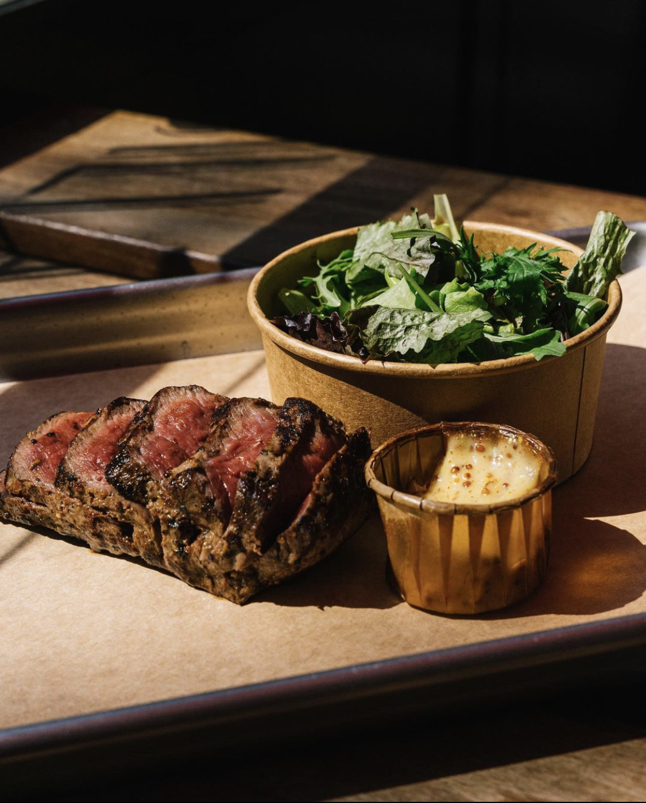

Devenez membre
de notre communauté !


Mentions légales CGU CGV Cookies Politique de Confidentialité

Bienvenue à La Maison de l'Aubrac, un restaurant familial qui existe depuis environ trois générations. Géré par la même famille depuis de nombreuses années, cet endroit sert une cuisine française traditionnelle qui ne manquera pas de plaire à tous les palais. Nos plats du jour changent tous les jours et peuvent inclure n'importe quoi, de la soupe à l'oignon au coq au vin. Notre menu comprend un assortiment de vins au verre (ou à la bouteille) et nous avons également une vaste sélection de spiritueux. Alors venez nous voir - nous serions ravis de vous rencontrer !
L'histoire de l'Aubrac Corner commence par une question simple : et si nous créions un bistrot français spécialisé dans la cuisine traditionnelle aveyronnaise ?
Aubrac Corner est un petit bistrot familial pittoresque de la rue Marbeuf, spécialisé dans la cuisine traditionnelle aveyronnaise. La brioche est très grillée et sèche, mais la viande est divinement tendre et juteuse. Il n'y a pas beaucoup d'espace (même pas de place pour les assiettes), et vous ne pourrez pas voir ou entendre grand-chose d'une autre table que la vôtre, mais en échange de cet inconvénient, vous bénéficiez d'une expérience un peu plus personnelle que dans la plupart des restaurants : d'après ce que j'ai pu voir, tous les employés connaissent le nom de leurs clients et discutent avec eux pendant qu'ils leur servent leur repas.

Vous avez faim ? La Maison de l'Aubrac est un restaurant français à Paris, spécialisé dans la cuisine française traditionnelle. Le restaurant appartient à une famille qui gère des restaurants depuis 3 générations et est ouvert depuis plus de 10 ans.